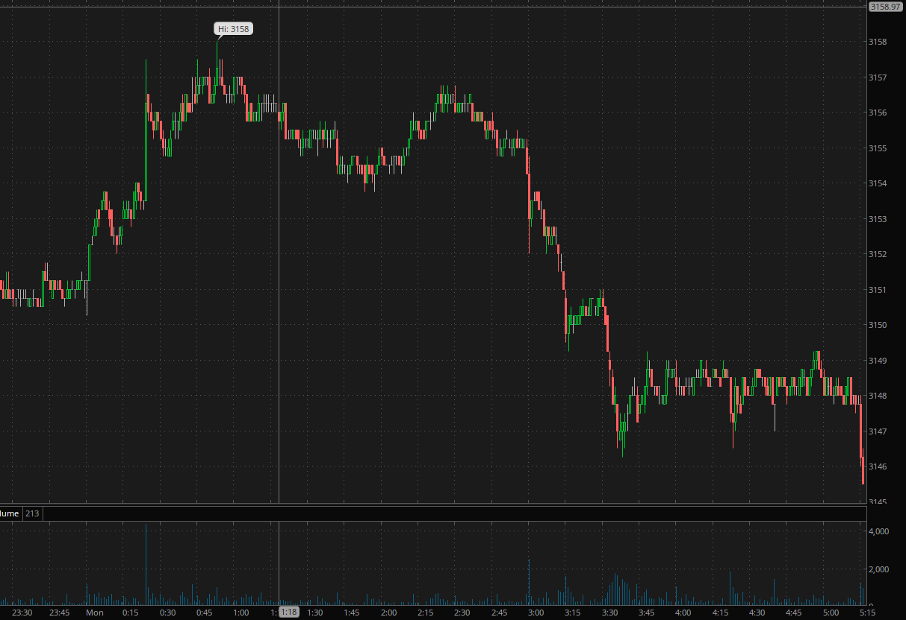

尖锐抚平反转走势
- 这个走势在创新高后，立刻拉回，如果不拉回，本来已经反转了。然后它再次稍微有新高，然后走平。
这个新高没有比原来高点高很多。只是稍微高一点点。这样就反转了。
- 这个不是说缓慢出现新高走平就反转了。一定要是前面已经出现了两段走势，只是第二段立刻拉回，
这样才有后来的更高点走平的样子。
- 这个是相对形状走势的应用

图示：8：00新高后，立刻拉回，这个不是单线走势，因为它的上涨虽然很快，但是下跌也很快。
速度差不多。它后面创新高后，走平。这个才算反转走势。虽然新高比原来高点没有高很多。

图示：周一半夜，它冲高，拉回，再次冲高。幅度和速度都超过第一浪。立刻拉回。再次冲高
走平。这样它其实已经反转了。所以这个走平就可以反转了。